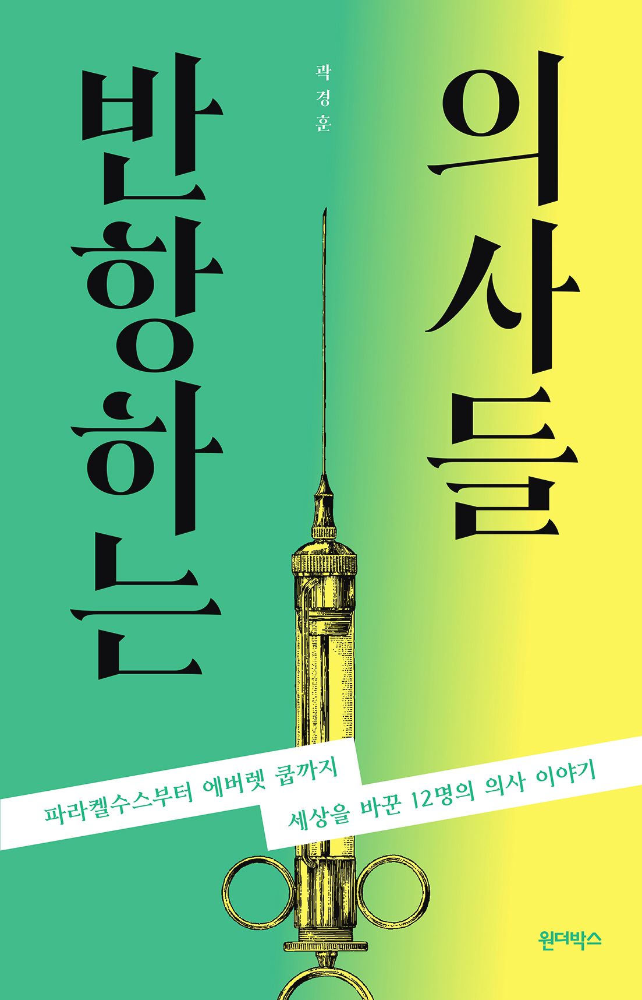
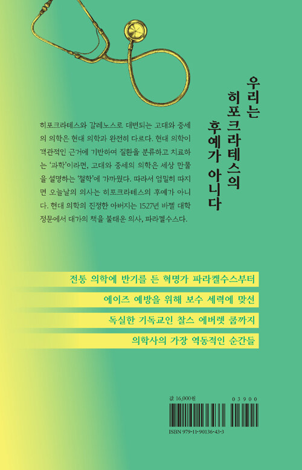

반항하는 의사들
파라켈수스부트 에버렛 쿱까지 세상을 바꾼 12명의 의사 이야기
곽경훈 지음


2021.04.22. 출간 / 248쪽 / 140*218mm / 무선 / 역사
"우리는 히포크라테스의 후예가 아니다"
문화·예술이 융성하던 르네상스 시기, ‘의학의 아버지’ 히포크라테스의 이론에 반기를 든 사내가 나타났다. 그는 이발소 외과 의사와 산파, 약초꾼을 불러 경험을 나누게 하고 ‘수백 년 전의 케케묵은 책이 아니라 현장에서 답을 찾아야 한다.’라는 내용을 설파하고 다녔다. 당시까지의 의학은 히포크라테스가 주장하고 갈레노스와 이븐 시나가 집대성한 ‘체액설’에 기반했다.
사내는 이에 반기를 들었다. 직접 관찰한 결과를 토대로 질병을 분류하고 규명하여 환자를 치료하라고 주장했다. 근거 중심주의에 기반한 현대 의학의 씨앗을 뿌린 셈이다. 급기야 1527년 6월 24일, 바젤 대학 정문 앞에서 갈레노스와 이븐 시나의 책을 불태운다. 이 사건으로 의학은 세상 만물을 설명하는 ‘철학’에서 객관적인 근거에 기반하여 질환을 분류하고 치료하는 ‘과학’이 되었다. 따라서 현대 의학의 아버지는 히포크라테스가 아니라 대가들의 서적을 불태운 반항하는 의사, 파라켈수스다.
혁명의 불꽃을 당긴 이단자 파라켈수스로 시작하여 에이즈 예방을 위해 보수 세력과 맞선 독실한 기독교인 보건총감 에버렛 쿱까지, 의학 발전에 이바지한 12명의 이야기를 엮었다. 그러나 모든 인물이 영웅의 삶을 살았던 것은 아니다. 그들 가운데에는 고결한 영웅도 있지만, 편협한 인간, 끔찍한 국수주의자도 있다. 의학사의 가장 역동적인 순간을 만들어 낸 그들의 흥미진진한 이야기를 만나 보자.